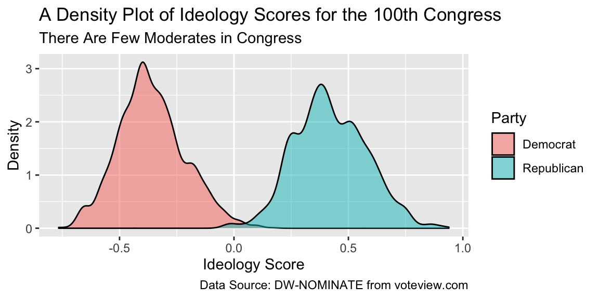
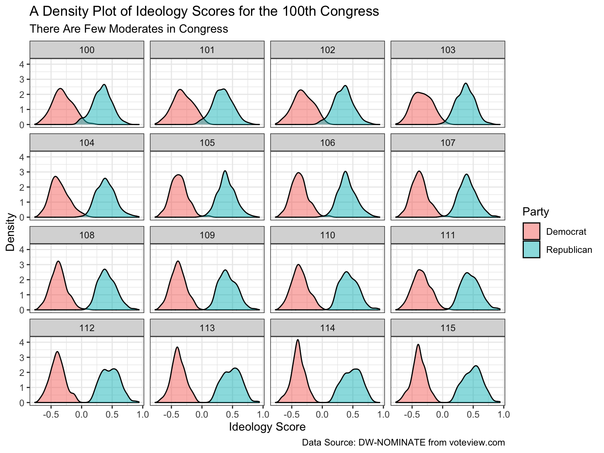

Chapter 4 Histograms
Histograms (and their variants, such as density plots and dot plots) serve as a useful tool for understanding the distribution of a single variable. For a histogram to work well, the variable of interest should take on enough values to require “binning” or lumping several values into the same column of the figure. This usually works for variables that we think of as continuous, such as income, age, effective number of political parties, GDP, number of casualties, etc.
4.1 NOMINATE Data
To see how histograms work, let’s work with estimates of the ideology of the U.S. House of Representatives. These data are called DW-NOMINATE Scores and are available at voteview.com. The cleaned data set nominate.csv includes the 100th through the 114th Congresses and contains a variable called ideology that captures a representative’s ideology.
These data are at the legislator-Congress level, so that each row in the data set represents an individual legislator in a particular Congress. More negative values indicate a more liberal representative. More positive values indicate a more conservative representative. For example, Ron Paul is one of the most conservative representatives in the data set with a score of about 0.86. Dennis Kucinich is among the most liberal and has a score of about -0.58.
To get started, let’s load the cleaned data.
## Warning: package 'tibble' was built under R version 3.6.2## Warning: package 'tidyr' was built under R version 3.6.2## Warning: package 'purrr' was built under R version 3.6.2## Warning: package 'dplyr' was built under R version 3.6.2# load data
nominate <- read_csv("data/nominate.csv")
# note: make sure the file 'nominate.csv' is in the 'data' subdirectoryWe can use the glimpse() function (part of tidyverse) to check that we properly load the data and get a quick overview. It shows us the variable names, the types of variables we’re working with (e.g., character, integer, double), and the first few values.
## Rows: 7,080
## Columns: 7
## $ congress <dbl> 100, 100, 100, 100, 100, 100, 100, 100, 100, 100, 100, 100, …
## $ chamber <chr> "House", "House", "House", "House", "House", "House", "House…
## $ state <chr> "AL", "AL", "AL", "AL", "AL", "AL", "AL", "AK", "AZ", "AZ", …
## $ district <dbl> 2, 4, 3, 5, 6, 1, 7, 1, 2, 3, 5, 4, 1, 3, 1, 4, 2, 36, 10, 2…
## $ party <chr> "Republican", "Democrat", "Democrat", "Democrat", "Democrat"…
## $ name <chr> "DICKINSON, William Louis", "BEVILL, Tom", "NICHOLS, William…
## $ ideology <dbl> 0.398, -0.213, -0.042, -0.175, -0.060, 0.373, -0.085, 0.279,…I’ve given the variables very descriptive names, but if you need more information, look in my codebook.
4.2 Histograms: geom_histogram()
Now let’s try a histogram.
To do this, we’ll use R package ggplot2, which is part of tidyverse. When we ran library(tidyverse), it automatically loaded ggplot2. If we hadn’t already run library(tidyverse), we could run library(ggplot2).
Though ggplot2 is a complex package, we’ll get some sense of how it works this semester. It is well-documented online, so feel free to read about it as much as you want or need.
4.2.1 The Three Critical Components
There are three critical components to each plot created using ggplot2, which we’ll refer to as a “ggplot.”
- the data: a formal data frame in R.
- the aesthetics: the relationship between the variables in the data set and the aesthetics of the plotted objects–location, color, size, shape, etc.
- the geometry: the type of plot.
There are other components, such as scales, statistics, and coordinate systems, but these the three critical components usually provide what we need.
4.2.2 Drawing a Histogram
- data: the first argument to
ggplot(). Because the variable we want to plot,ideologyis contained in the data framenominate, we usenominateas the first argument. - aesthetic: the second argument to
ggplot(). Because we want to create a histogram, we wantideologyto correspond to the location along the horizontal-axis. To create this correspondence, we useaes(x = ideology)as the second argument. - geometry: added to
ggplot()with+. Because we want a histogram, we usegeom_histogram(). (It’s weird to add a function to another function with+. And it is unusual. Nothing else in R works quite like this. It’s how ggplot2 works, though.)
# specify data and aesthetic, then add the geometry
ggplot(nominate, aes(x = ideology)) + geom_histogram()
This histogram makes sense. We have a grouping of Democrats (presumably) on the left and a grouping of Republicans (again, presumably) on the right. You could probably come up with a model that explains why there are few politicians in the center.
There are three subtle points that I should emphasize about the line ggplot(nominate, aes(x = ideology)) + geom_histogram().
- The first argument supplied to
ggplot()is the data. The second argument is the aesthetics. - The second argument,
aes(...)is itself a function. This function just creates the “aesthetic mapping,” a link between the variables in the data set and space, color, size, shape, etc, in the chart. geom_histogram()is also a function, but it is added to the plot using+. We’ll see several other functions that can be added to the plot.
Review Exercises
- List and describe the three critical components of a ggplot.
- In the following snippet of code, label the data, the aesthetics, and the geometry:
ggplot(nominate, aes(x = ideology)) + geom_histogram(). - In this section, we’ve seen three new functions:
ggplot(),aes(), andgeom_histogram(). Describe what each one does and how to use it.
4.2.3 But geom_histogram() uses counts!
FPP uses density on the vertical-axis, not counts. geom_histogram() uses counts by default.
This is important, because if the bin widths of the histograms are not equal, then counts create a misleading histogram. However, if the bin widths are equal, then counts and densities produce identically shaped histograms. (The vertical axis has a different scale, though.)
Because we tend to use equal bin widths in practice, it often doesn’t matter whether we use counts or densities.
If you want to change the default behavior, add y = ..density.. to the aesthetics. (By default, geom_histogram() sets y = ..count...)
# specify data and aesthetic, then add the geometry
ggplot(nominate, aes(x = ideology, y = ..density..)) + geom_histogram()
4.3 Filtering: filter()
Above, I plot the distribution of ideology scores for 15 different Congresses (the 100th through the 114th) in the same histogram.
Let’s create a histogram for the 100th Congress only.
To do this, first create a data set that contains only cases from the 100th Congress
To create a subset of nominate that only contains the 100th Congress, use the filter() function (part of tidyverse). The first argument to filter() is the data frame to be filtered and the second argument is a logical statement that identifies the cases to keep.
# filter the 100th congress
nominate100 <- filter(nominate, congress == 100)
# quick look
glimpse(nominate100)## Rows: 441
## Columns: 7
## $ congress <dbl> 100, 100, 100, 100, 100, 100, 100, 100, 100, 100, 100, 100, …
## $ chamber <chr> "House", "House", "House", "House", "House", "House", "House…
## $ state <chr> "AL", "AL", "AL", "AL", "AL", "AL", "AL", "AK", "AZ", "AZ", …
## $ district <dbl> 2, 4, 3, 5, 6, 1, 7, 1, 2, 3, 5, 4, 1, 3, 1, 4, 2, 36, 10, 2…
## $ party <chr> "Republican", "Democrat", "Democrat", "Democrat", "Democrat"…
## $ name <chr> "DICKINSON, William Louis", "BEVILL, Tom", "NICHOLS, William…
## $ ideology <dbl> 0.398, -0.213, -0.042, -0.175, -0.060, 0.373, -0.085, 0.279,…Use this new data frame to draw the histgram.
Repeat that process, but for the 114th Congress.
# subset data to only 114th congress
nominate114 <- filter(nominate, congress == 114)
# quick look
glimpse(nominate114)## Rows: 441
## Columns: 7
## $ congress <dbl> 114, 114, 114, 114, 114, 114, 114, 114, 114, 114, 114, 114, …
## $ chamber <chr> "House", "House", "House", "House", "House", "House", "House…
## $ state <chr> "AL", "AL", "AL", "AL", "AL", "AL", "AL", "AK", "AZ", "AZ", …
## $ district <dbl> 3, 7, 2, 5, 1, 6, 4, 1, 8, 3, 1, 4, 6, 9, 2, 7, 5, 1, 3, 2, …
## $ party <chr> "Republican", "Democrat", "Republican", "Republican", "Repub…
## $ name <chr> "ROGERS, Mike Dennis", "SEWELL, Terri", "ROBY, Martha", "BRO…
## $ ideology <dbl> 0.338, -0.390, 0.367, 0.600, 0.544, 0.779, 0.361, 0.279, 0.7…Review Exercises
- Explain what the
filter()function does and how to use it. What are the first and second arguments? What type of object does it return? Usehelp(filter)for the details.
4.4 Faceting: facet_wrap()
Let’s investigate this divergence in the parties more carefully.
Is the left hump actually Democrats? Is the right hump actually Republicans?
Apply a facet to the histogram. A facet simply breaks the data frame into subsets and draws one histogram per subset.
Create a facet by adding the function facet_wrap() to the plot. You’ll have to specify the faceting variable as an argument to the facet_wrap() function. In this case, we’ll do it by party, adding + facet_wrap(vars(party)) (i.e., “create a facet by the variable party”) to the ggplot we’ve been using.
# build histogram
ggplot(nominate100, aes(x = ideology)) +
geom_histogram() +
facet_wrap(vars(party))Indeed, the left hump is Democrats and the right hump is Republicans.
Review Exercises
- What does a facet do to a plot?
- Explain what the
facet_wrap()function does and how to use it. - Suppose I added
+ facet_wrap(party). Would that work? What is missing? - Suppose you
+ facet_wrap(vars(state))toggplot(nominate100, aes(x = ideology)) + geom_histogram(). What would happen? facet_grid()offers an alternative method to faceting. How is it different fromfacet_wrap()? You might find this documentation helpful. With an example, show how to usefacet_grid().
4.5 Density Plots: geom_density()
FPP sometimes uses a rough sketch of a histogram using a smooth curve rather than a complete histograms with vertical bars.
For our purposes, a density plot is a smooth curve that approximates a histogram.
We can easily create a density plot rather than a histogram by using geom_density() as the geometry rather than geom_histogram().

Review Exercises
- How is a density plot similar to and different from a histogram? The proceedure for estimating the density is actually complicated and there are several ways to do it. I care about the intuition.
- What does the function
geom_density()do and how do you use it?
4.6 Color and Fill
4.6.1 Color
A density plot has the advantage it uses less ink. Because of this, we could use color rather than faceting to distinguish Republicans and Democrats.
To distinguish Republicans and Democrats with color, add color = party to the aesthetics.

This look really good! Since we are most interested in the overlap between the parties, I think this density plot makes more sense for us, so let’s stick with it.
4.6.2 Fill
Instead of coloring the lines differently, you can “fill” the density with different colors. While the color aesthetic represents the color of the line itself, the fill aesthetic represents the fill inside the line.
To distinguish between the parties using fill, add fill = party to the aesthetics.
4.6.3 Alpha
Notice that the Republican fill (blue-green) completely covers the Democrat fill (orange-red). But here’s a hint. The alpha argument to geom_density() controls the transparency. alpha = 0 is completely transparent. alpha = 1 is not transparent at all.
# build density plot
ggplot(nominate100, aes(x = ideology, fill = party)) +
geom_density(alpha = 0.5)
This slight transparency makes both distributions visible, even when the two overlap.
Review Questions
- Explain the difference between the color and fill aesthetics for density plots.
- Use color to show the separate distributions of ideology scores for all 15 Congresses. It this useful?
- Explain how alpha transparency works and why you might use it. Suppose I used
alpha = 0.1instead ofalpha = 0.5in the plot above. How would the plot change?
4.7 Labels: labs()
By default, ggplot() uses the variable names to label the axes and legend. By default, there is no title, subtitle, or caption.
You will usually want to improve the axis labels and legends. You will sometimes want to add a title, subtitle, and/or caption. Make these changes by adding the labs() function to the plot.
To the labs() function, supply one argument per aesthetic, such as x, y, color, or fill. You can also supply arguments for title, subtitle, or caption if you wish. These argument are character strings (surrounded by quotes), such as "Ideology Score" or "A Density Plot of Ideology Scores for the 100th Congress".
# build density plot
ggplot(nominate, aes(x = ideology, fill = party)) +
geom_density(alpha = 0.5) +
labs(x = "Ideology Score",
y = "Density",
fill = "Party",
title = "A Density Plot of Ideology Scores for the 100th Congress",
subtitle = "There Are Few Moderates in Congress",
caption = "Data Source: DW-NOMINATE from voteview.com")
This plot looks pretty nice.
Review Exercises
- By default, how does
ggplot()label the axes and legends? - How can you change the default labels? How can you add a title, subtitle, or caption?
- Explain what the
labs()function does and how to use it. - Explain, in as much detail as you can, what each part the last block of code above does.
4.8 Themes: theme_bw() and Others
Use themes to control the overall look of our ggplots. The theme controls elements such as the color of the background, the font family and size, the color and size of the grid, etc.
There are the six themes provided with ggplot2.
| Theme | Description |
|---|---|
theme_grey() |
The signature ggplot2 theme with a grey background and white gridlines, designed to put the data forward yet make comparisons easy. |
theme_bw() |
The classic dark-on-light ggplot2 theme. May work better for presentations displayed with a projector. |
theme_linedraw() |
A theme with only black lines of various widths on white backgrounds, reminiscent of a line drawings. Serves a purpose similar to theme_bw(). |
theme_light() |
A theme similar to theme_linedraw() but with light grey lines and axes, to direct more attention towards the data. |
theme_minimal() |
A minimalist theme with no background annotations. |
theme_classic() |
A classic-looking theme, with x and y axis lines and no gridlines. |
Notice what happens when you add theme_bw() (my favorite!) to the plot.
# build density plot
ggplot(nominate100, aes(x = ideology, fill = party)) +
geom_density(alpha = 0.5) +
theme_bw()If you are interested, the ggthemes package includes several other themes.
| Theme | Description |
|---|---|
theme_economist() |
based on the Economist |
theme_economist_white() |
based on the Economist |
theme_excel() |
based on Excel |
theme_few() |
based on Few’s “Practical Rules for Using Color in Charts” |
theme_fivethirtyeight() |
based on fivethirtyeight.com plots |
theme_gdocs() |
based on Google docs |
theme_igray() |
inverse grey |
theme_pander() |
based on the pander package |
theme_solarized() |
based on the Solarized palette |
theme_solarized_2() |
based on the Solarized palette |
theme_stata() |
based on default Stata graphics |
theme_tufte() |
based on Tufte–minimum ink, maximum data |
theme_wsj() |
based on Wall Street Journal |
Try the the infamous (famously ugly) Excel theme.
# load packages
library(ggthemes) # for additional themes and even more fun!
# build density plot
ggplot(nominate100, aes(x = ideology, fill = party)) +
geom_density(alpha = 0.5) +
theme_excel()Review Exercises
- What are themes in ggplot2? What do they control/change?
- How do you change the theme of a ggplot?
- What are a few theme options from ggplot2? From ggthemes?
- Try a few different themes from both ggplot2 and ggthemes. What is your favorite and why?
4.9 Putting It All Together
We’ll add two things back in. First, we’ll put out nice labels back in. Second, let’s go back to the nominate data frame (we’ve been using nominate100) and facet by Congress.
# build density plot
ggplot(nominate, aes(x = ideology, fill = party)) +
geom_density(alpha = 0.5) +
facet_wrap(vars(congress)) +
labs(x = "Ideology Score",
y = "Density",
fill = "Party",
title = "A Density Plot of Ideology Scores for the 100th Congress",
subtitle = "There Are Few Moderates in Congress",
caption = "Data Source: DW-NOMINATE from voteview.com") +
theme_bw()
4.10 Saving Plots: ggsave()
It is quite easy to save a ggplot as a .png or some other file. You just use the function ggsave(), which, by default, saves the last plot you created.
- Create the plot you want.
- Decide the file type you want to save your figure as.
.pngis a fine choice for our purposes. - Choose where you want to save your figure. This should be somewhere in your working directory. I use
doc/figs/. - Choose a compact, descriptive name for your figure. For our final density plot, perhaps use
ideology-by-congress.png. - Use
ggsave().
There are three important arguments to ggsave().
filename: This is the first argument toggsave(). This is the file path. Given the choices above, it’s"doc/figs/ideology-density-by-congress.png".height: Explicitly name this argument. It controls the height of the figure (in inches, by default).height = 4is a good starting point, but experiment.width: Explicitly name this argument. It controls the width of the figure (in inches, by default).width = 5is a good starting point, but experiment.
# save last plot as png
ggsave("doc/figs/ideology-density-by-congress.pdf", height = 5, width = 8)Just to review and wrap up, here is the fill R script that I might use to create and save this figure.
# load packages
library(tidyverse) # loads readr, ggplot2, and others
# load data
nominate <- read_csv("data/nominate.csv") # data are in the data/ subdirectory
# quick look at the data
glimpse(nominate)
# build plot
ggplot(nominate, aes(x = ideology, fill = party)) +
geom_density(alpha = 0.5) +
facet_wrap(vars(congress)) +
labs(x = "Ideology Score",
y = "Density",
fill = "Party",
title = "A Density Plot of Ideology Scores for the 100th Congress",
subtitle = "There Are Few Moderates in Congress",
caption = "Data Source: DW-NOMINATE from voteview.com") +
theme_bw()
# save last plot as png to the figs subfolder of the doc subfolder
ggsave("doc/figs/ideology-density-by-congress.pdf", height = 5, width = 8)Review Exercises
- Explain how to save a ggplot. Be sure to discuss each of the five steps.
- Identify and describe each of the three arguments we usually supply to
ggsave(). - Explain, in as much detail as you can, what each part the last block of code above does.